01 · First Principles · 30:50
The Thinking Machines: a history of AI
7 Shorts · also with the Interstellar-style score
Library · 13 Nov 2026 Every film, Short, pilot, Lab experience and asset so far, with where to find it. The production steps are on the content pipeline; the plan to grow is in the growth playbook.
Each has a full-quality master on the masters branch, a thumbnail, Shorts and an upload kit (youtube.md).
7 Shorts · also with the Interstellar-style score
5 Shorts · Interstellar-style score · Hindi version (17:38)
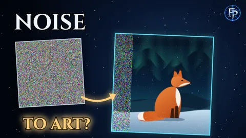
3 Shorts
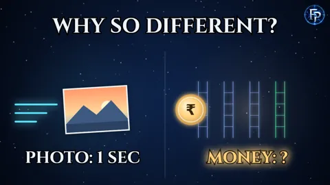
3 Shorts
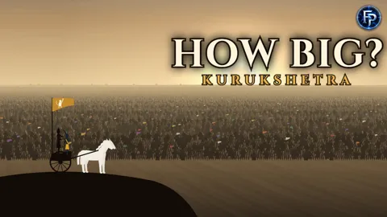
3 Shorts · a Lab experience
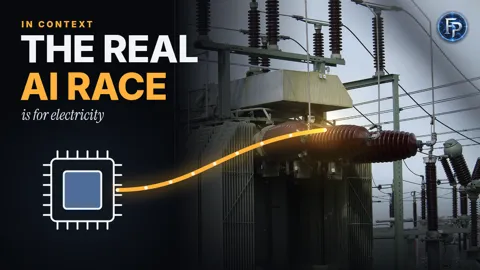
3 Shorts
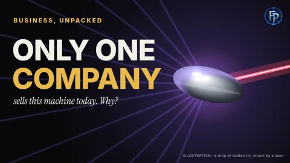
3 Shorts · a Lab experience
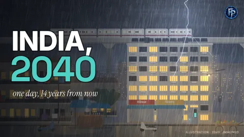
5 Shorts · Interstellar-style score · a Lab experience
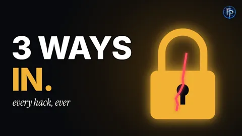
7 Shorts · the first film narrated by Arjun
Bindu and Gappu · Arjun · the full film in 9:16 and a 26 s Short
Each pilot tests a format. A draft passes the automatic checks and the critic panel. It goes to the masters branch once it has Arjun's voice and your sign-off.
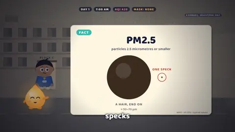
draft · Arjun one smoggy street drawn in code · checks pass · critics 8.5 / 8.5
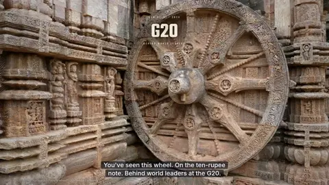
draft · Arjun credited photos, including an 1890 view; the sealed hall drawn in code · checks pass · critics 8.5 / 8.6
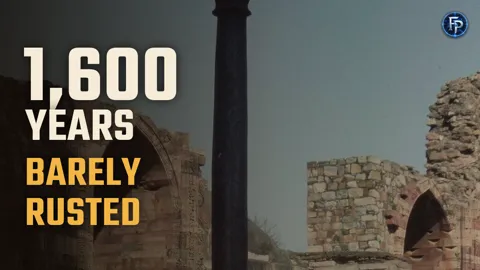
draft with three labelled AI shots · kept for later · needs Arjun (~3 credits)
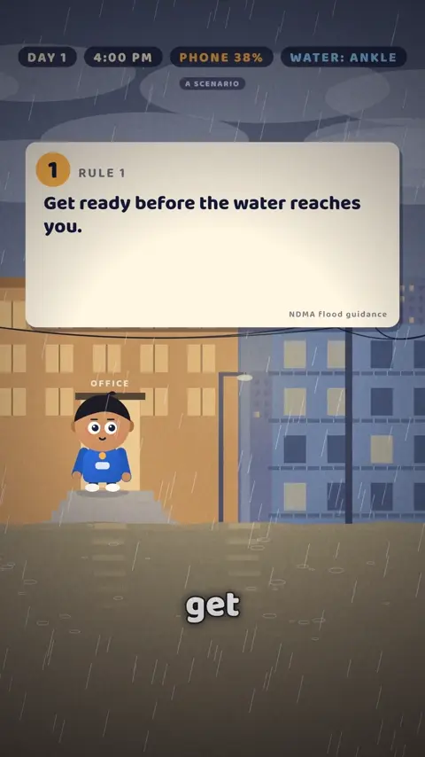
draft kept for the monsoon · needs Arjun
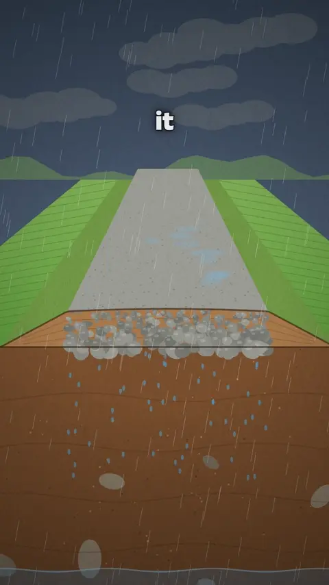
draft critics 8.6 / 8.7 · needs Arjun
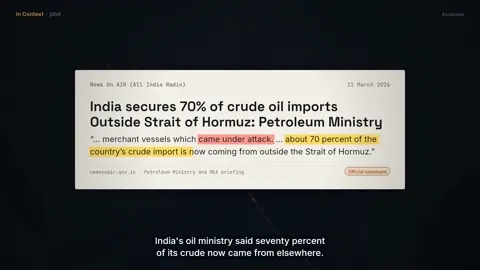
pilot the In Context look and score
Interactive 3D experiences at firstprinciplesstudio.in: the visitor predicts, acts and sees the consequence.
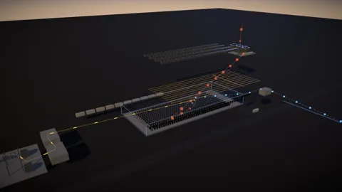
Follow one prompt.
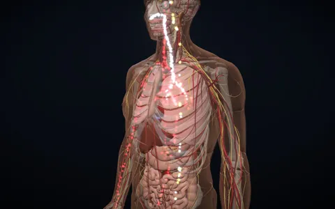
Explore the system that keeps you alive.
Step into one possible future.
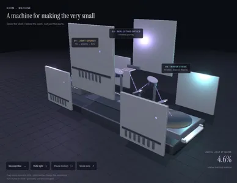
Follow one drop of tin.
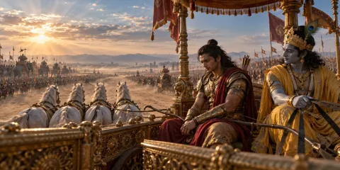
Inside the Mahabharata.
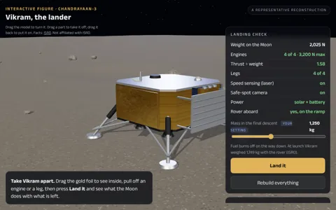
Take Chandrayaan-3's lander apart and land what's left; a 10 s Short captured from it
Become a proton.
Survive one sol.
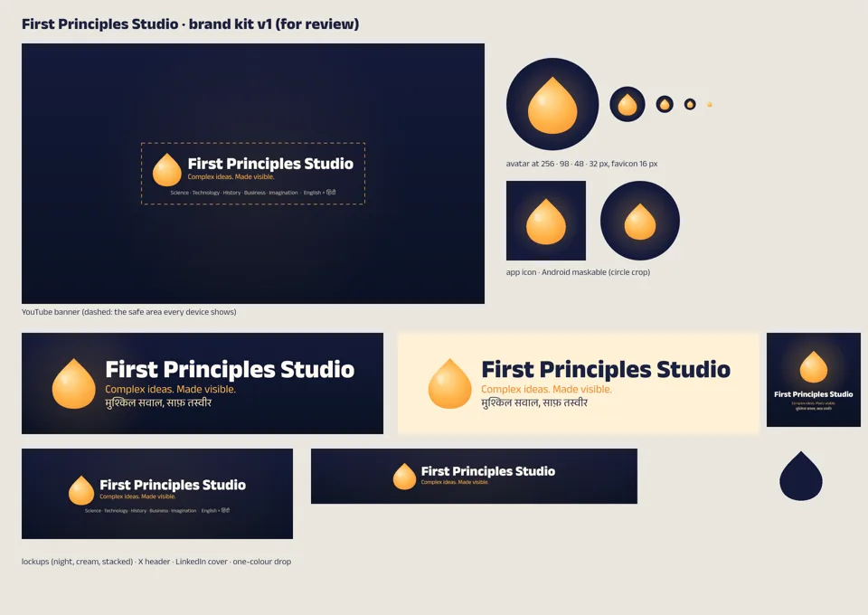
33 files: avatars for every platform, the YouTube banner, X, LinkedIn and Facebook covers, web and app icons, lockups, one-colour marks. Made by scripts/brand_kit.mjs. Plan: growth playbook, section 14.
The guide: a warm drop of light, and the logo come alive. Drawn in code.
"You" in the animated films: the star of What If You… and Survive It.
| Tool | What it does |
|---|---|
| The film engine | every frame drawn in code from the narration's clock; 16:9 and 9:16 from one script (engine/video) |
| 2.5D plates | a photo turned into depth layers a camera can move through (depth.py, plate()) |
| Voices | Kokoro for drafts; Arjun recorded once per scene and kept in git: films 10, 11, 15 and 16 (voice_lines.py) |
| Music | "Organ & Time" scores and a thriller cue, written in code and hit on the word (engine/audio) |
| Archive | licence-checked public-domain film and 78 rpm sound from archive.org (scripts/archive_org.py) |
| Assets | real uploads and AI shots, with credits and labels recorded (scripts/assets.py) |
| Quality report | loudness, speech clarity, one-frame jumps, subtitles and asset rights on every render (scripts/qa.py) |
| Masters | full-quality files in ~95 MB pieces with checksums and join scripts (scripts/publish_master.sh) |
| Type per series | six type pairs with their Hindi partners (docs/type/) |
The masters branch of the studio repository: open a film's folder and run join.sh (macOS, Linux) or join.bat (Windows) to rebuild the MP4. The .srt beside it is the caption file for YouTube.
In each film's folder: videos/<film>/shorts/, thumbnail.png and youtube.md (titles, description with sources, chapters, tags).
Pilot renders aren't kept in git until they become masters. Each one is rebuilt from its code and recorded voice at any time, and sent to you when it's finished.
youtube.com/@firstprinciplesstudio · the Lab at firstprinciplesstudio.in